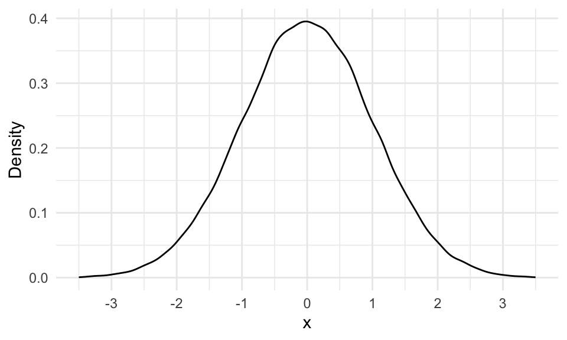

7 Inferential Statistics
The second branch of statistics, inferential statistics, has a core objective: To make inferences about the population of interest based on a sample of observations from that population. Recall the definition of an inference being a conclusion about unknown facts based on known facts. In inferential statistics, the “unknown facts” are quantities in the population. They may be univariate in nature. What is presidential approval in the population? What is the degree of public support for democracy in worldwide context? Which candidate leads in a presidential election race two months out from election day? How much judicial independence is there around the world?
Such unknown population quantities may also bivariate in nature. These quantities relate to the effect of an independent variable on a dependent variable. What is the effect of education on voter turnout? Does liberal democracy influence support for human rights around the world?
Researchers who engage in inferential statistics seek to make a conclusion about the population from which their sample is drawn. Descriptive statistics are also concerned with generalization, but inferential statistics use extra tools to communicate uncertainty about how closely our sample statistic represent the associated population parameter. The ANES dataset used in this book is a sample of 5,521 American adults. The associated population includes all American adults in the United States, of which there are approximately 260 million (as of 2026). Quantities associated with a sample are called “statistics” or estimates, while quantities associated with a population are called “parameters.” Population parameters are unknown quantities about which we seek to make inferences.
What makes descriptive statistics from a sample (like the ANES) generalizable to the population is that the survey firm recruited a random sample of American adults from the population. In a true random sample, every person in the population has an equal probability of being selected. These samples are often called “probability samples.” They have the major benefit of being a “nationally representative sample,” which means descriptive statistics from such a sample are generally representative of the population. The gold standard for public opinion surveys used to be “random digit dialing,” or RDD, where survey firms would randomly select 1,000 or 2,000 land line phone numbers and survey those respondents. For many years now, RDD has faced challenges due to declines in the use of land lines and the rise of cell phones. Survey firms have sought to adjust to these societal changes by using address-based sampling and probability-based online surveys.1
While random samples may be representative of the population, analysts must show humility and concede that their one random sample has not necessarily hit the bullseye — that is, the target population. Uncertainty occurs due to what analysts call “sampling error.” Using a dart-throwing analogy, where the bullseye represents a perfect representation of the population, any one random throw may miss the bullseye (assume we have dart-thrower with a high skill level). However, if we track, say, 100 throws, we would see that the hits may be tightly distributed around the bullseye, with some throws hitting the bullseye, some missing by a little, and some missing by a moderate amount. In the aggregate, across many “samples” (each dart throw is like taking a survey sample), we may see convergence of throws at or close to the bullseye.
The misses from the bullseye are akin to “random sampling error.” If we took a billion random samples of the American adult population, some of those samples will be perfectly representative of the population (a bullseye), some will miss that target by a little, and some may miss the target by a moderate amount. The fact that we get just one sample means that we have to incorporate this random sampling error into our calculations somehow.2 Random sampling error is precisely the type of uncertainty to which I have been referring: Analysts must incorporate uncertainty based on the fact that they are drawing a very small sample from a very large population. However, random sampling error is a theoretical quantity that relies on statistical and probability theory for estimation. These elements are at the heart of inferential statistics.
Readers who follow presidential elections closely are actually inundated with inferential statistics. Media and commentators report on the “horse race” between the two candidates during the election campaign using public opinion polls (akin to the ANES dataset used in this book). With very close elections in the contemporary era, we often hear that while a poll result shows one candidate slightly ahead, the poll actually shows a “statistical tie” between the candidates because the gap between the two candidates is within the “margin of error.” Such a report is saying that the degree of “random sampling error” (statistical and probabilistic uncertainty) is too high to make a confident conclusion about whether one candidate is firmly ahead in the race. A report like this comes directly from an analysis employing inferential statistics. In fact, the “margin of error” you hear reported in polls (e.g., “plus or minus 3%”) is a critical quantity in the “95% confidence interval” equation, which I will discuss in depth in this chapter. A “confidence interval” is indeed one of the workhorses of inferential statistics.
This chapter will delve into the foundations of inferential statistics and applications in political science analysis and research. To dive into these foundations, we must first revisit the normal distribution as a “probability distribution” in order to understand the theory underlying estimates of “random sampling error,” or statistical uncertainty. The chapter draws on that theory to generate concrete estimates of this random sampling error in the form of what is known as a “standard error” associated with a “sample statistic.” Once we have these two pieces of information, we can estimate the aforementioned “95% confidence interval” and other inferential statistics quantities in order to generate conclusions about “statistical significance.” This term is related to the “statistical tie” concept discussed earlier with respect to media discussion of public opinion polls. Finally, I will go over the process of hypothesis testing, which combines elements of theory and hypotheses from Chapter 2 with inferential statistics and conclusions about statistical significance for the effect of an independent variable on a dependent variable. Hypothesis testing is akin to what is more broadly known as the “scientific method” — the steps involved in making an inference about a population quantity of interest.
7.1 The Normal Distribution
Prior chapters have made use of the general properties of a normal distribution. They have described the normal distribution as bell-shaped, symmetric, “single-peaked,” or unimodal, and centered around a “unified” central tendency (mean=median=mode). The graph below shows the “standard normal distribution” (mean=0, standard deviation=1) that past chapters have included.
Recall Chapter 6’s discussion of the rules of the normal distribution in terms of interpreting standard deviation:
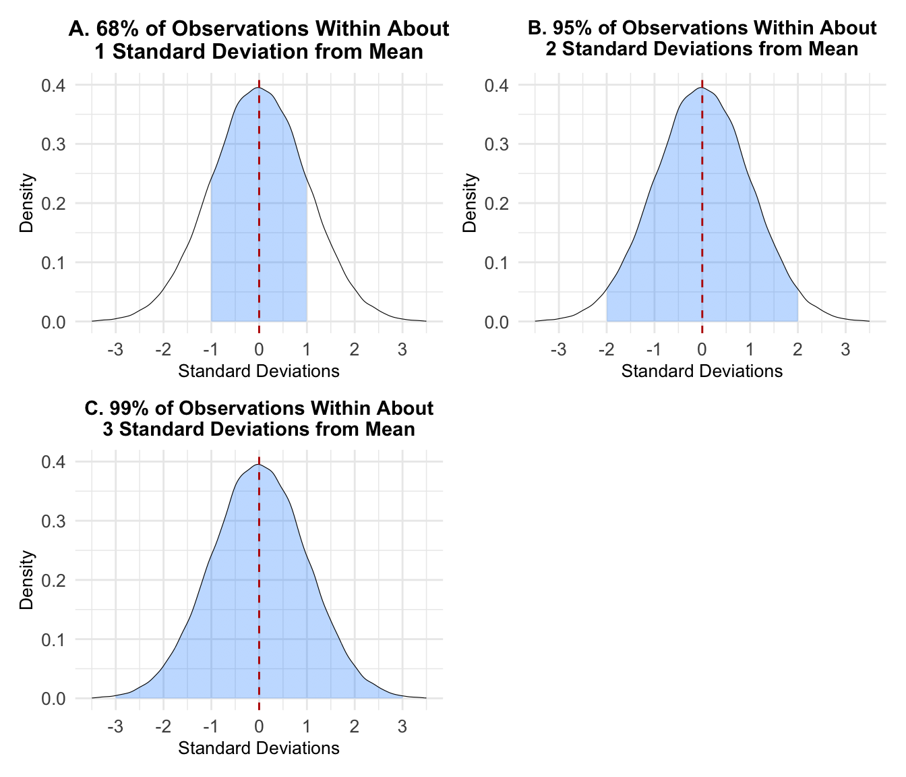
Chapter 6 discussed how in the normal distribution, 68% of observations fall within about 1 standard deviation from the mean, 95% of observations fall within about 2 standard deviations from the mean, and about 99% of observations fall within about 3 standard deviations from the mean.
Where do those numbers actually come from? To understand where they come from, we must understand the nature of the normal distribution as a probability distribution. Understanding these elements of a probability distribution like the normal distribution (or other distributions as well) is actually a first step toward understanding the foundations of inferential statistics.
7.1.1 Probability Density Function (pdf) for the Normal Distribution
First, Chapter 6 discussed that the “density” on the y-axis is proportional to, but not synonymous with, a probability. We know that the higher this value is for a given value of x, the more observations there are. In that sense, the normal distribution is also like a frequency distribution that reports the percentage of observations for each value of x.
The “density” aspect of a normal distribution comes from the probability density function, or “pdf,” of x. The pdf for the normal distribution is formalized via this (scary!) equation:
\[\operatorname{pdf}(x)=f(x)=\frac{e^{-(x-\mu)^2/(2\sigma^2)}}{\sigma\sqrt{2\pi}} \] The two parameters of the normal distribution are \(\mu\), which is the population mean, and \(\sigma^2\), which is the population variance. In the denominator is \(\sigma\), which is the square root of the variance, or the standard deviation. When we are working with sample data, we plug in parameter estimates of \(\mu\) and \(\sigma^2\), which are \(\bar{x}\) and \(\hat{\sigma}^2\), respectively.
Just to capture the intuition visually, the graph below shows the pdf, or density, when x=0.8. To get the pdf(x=0.8), we would plug in 0.8 for x in the equation above. Since this is a standard normal distribution, the mean (\(\bar{x}\)) is 0 and the standard deviation (\(\hat{\sigma}\)) is 1; the variance (\(\hat{\sigma}^2\)) is also 1. We would simply plug those quantities in as well and then calculate the pdf estimate when x=0.8.
exp( (-(.8^2))/2) / (sqrt(2*pi) )[1] 0.2896916Rounding to two decimal places, the estimate is 0.29. The graph below illustrates the aforementioned logic for when x=0.8.
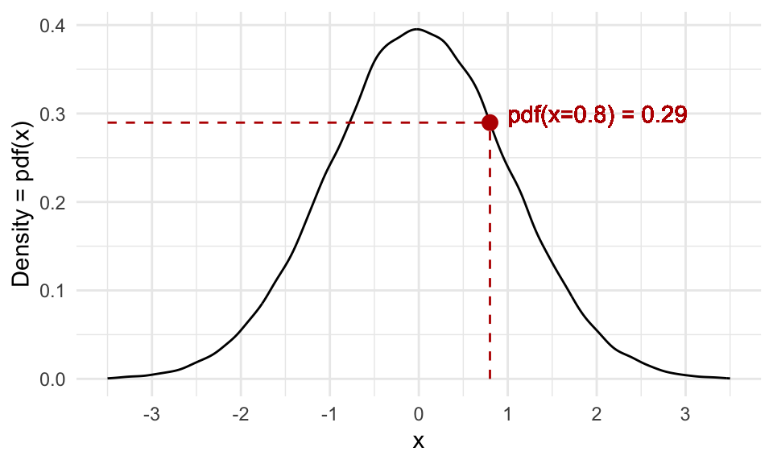
RStudio has built-in functions for calculating values associated with various probability distributions. For the normal distribution, the dnorm function calculates a pdf estimate for a given x value. Using dnorm does the exact same thing as plugging the relevant values into the normal pdf equation above.
dnorm(0.8, mean=0, sd=1)[1] 0.2896916Note that the first value I insert is my x value, 0.8. Then, I insert what the mean and s.d. are for my normal distribution. Since this is a standard normal distribution, I simply insert mean=0 and sd=1. Note that the output provides the exact same value as plugging in these three values to the pdf equation for the normal distribution above.
By default, the dnorm function assumes a standard normal, so I could remove the mean and sd specifications in this command since I have a standard normal.
dnorm(0.8)[1] 0.2896916As expected, this command generates the same result.
7.1.2 Cumulative Distribution Function (cdf) for the Normal Distribution
The pdf for a particular x value does not have a straightforward interpretation, aside from giving us relative comparisons based on the height of the curve. What is more intuitive is making interpretations about the area under the normal curve for particular values of x. This relates to our discussion of percentiles in Chapter 6. In a probability distribution like the normal, the total area (total probability space) under the curve equals 1. That is a necessary condition for a probability distribution.
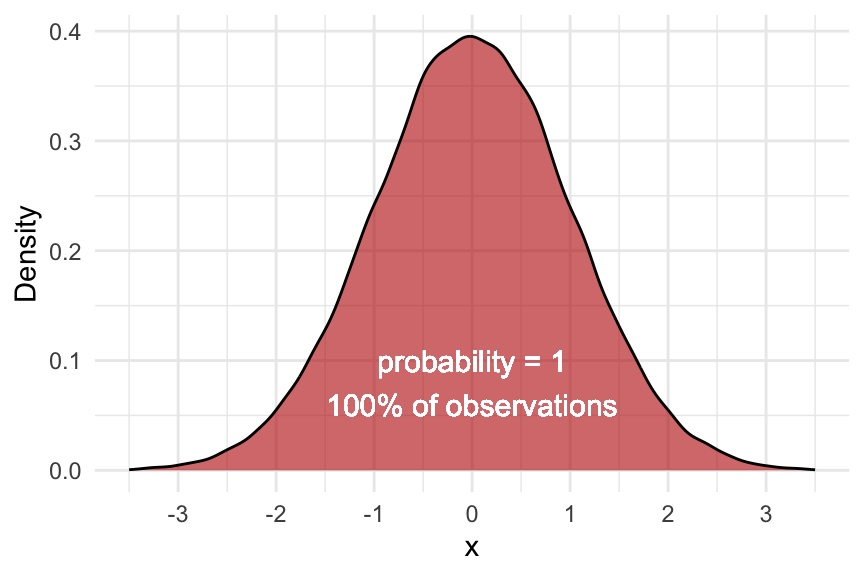
We also know from our discussion of a median in Chapter 6 that in a perfect normal like this one, mean = median = mode = 0. We know from our discussion of percentiles that the median, which is 0, splits the data in half such that half of the observations are at or below the median and half are above. The graph below demonstrates this intuition.
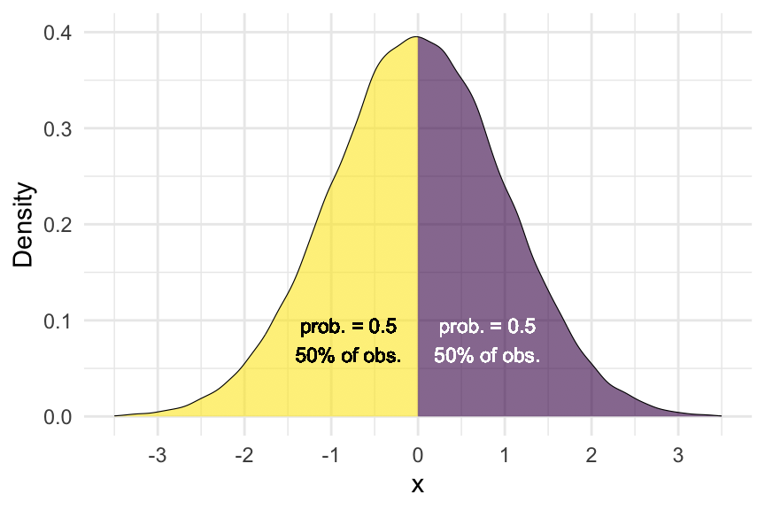
In probability terms, we could say that an observation has a 50% chance of being greater than zero and a 50% chance of being less than zero. We could also say that 50% of observations are less than 0 (the mean, median, and mode) and 50% of observations are greater than 0.
The cumulative distribution function (cdf) for the normal distribution provides a generalization for communicating such conclusions. Specifically, it provides us with the probability that an observation will fall at or below a particular number, or cutoff. In this sense, it is very similar to percentiles. Recall that a percentile is the percentage of observations at or below a particular value. That is exactly what the cdf does. Here is the equation:
\[F(x)=prob(X \le x) = \int_{-\infty}^{x}f(t)~dt\] The notation is the probability that X is less than some cutoff x. Think of X as a given observation or point less than the cutoff, x. The whole quantity indicates the area under the normal curve to the left of (less than or equal to) the cutoff, x. Thinking back to the example above where I used 0 as the cutoff, we would want to estimate: \(prob(X \le 0)\). The answer, which we know without having to do any calculations is 0.5. That is, the area under the curve to the left of 0 is 0.5. Put another way, 50% of the observations are less than 0.
The pnorm command generates the cdf for a given cutoff. Below, I show that the cdf when the cutoff, x, is 0 is indeed 0.5.
pnorm(0, mean=0, sd=1)[1] 0.5Like in the dnorm command, the pnorm command assumes a standard normal distribution, so in this example, I would not need to insert mean=0, sd=1.
When working with these quantities, it is always best to use graphs (like the one above) to identify the cutoff, x, and the area under the normal curve we want to estimate via the cdf. Below are four examples:
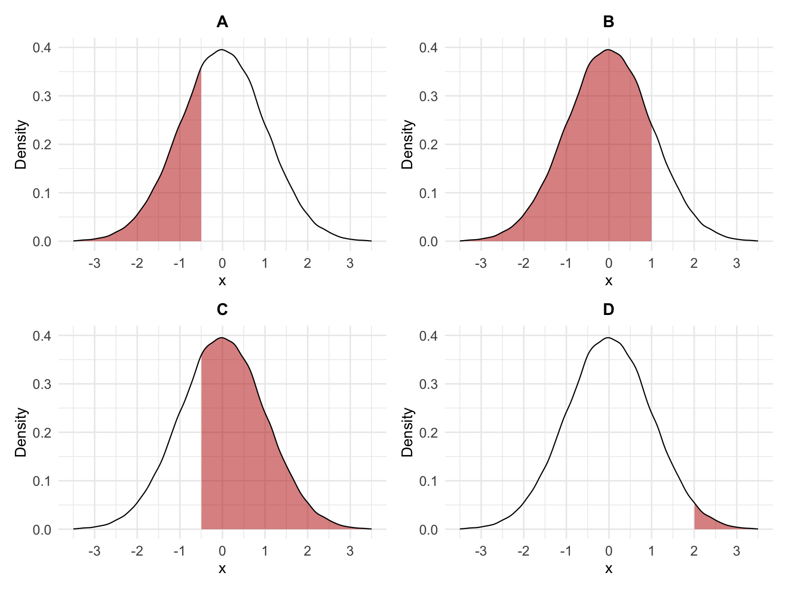
For graphs A and B, we can simply use the cdf and enter the cutoffs -0.5 for A and 1 for B.
# Graph A:
pnorm(-.5)[1] 0.3085375# Graph B:
pnorm(1)[1] 0.8413447The area under the normal curve to the left of (or less than or equal) -0.5 is about 0.31. The area under the curve less than or equal to 1 is about 0.84.
For graphs C and D, we want the area under the curve to the right of, or greater than, the cutoff. Since the cdf, by definition, gives us the area under the curve that is less than or equal to the cutoff, we need to take 1 minus the cdf to get these quantities:
# Graph C:
1 - pnorm(-.5)[1] 0.6914625# Graph D:
1-pnorm(2)[1] 0.02275013The area under the curve greater than -0.5 is about 0.69. The area under the curve to the right of 2 is 0.023.
The graph below shows the cdf for the full range of cutoffs, x. This S-shape naturally exists because the probability distribution is bounded at 0 and 1, which are the limits.
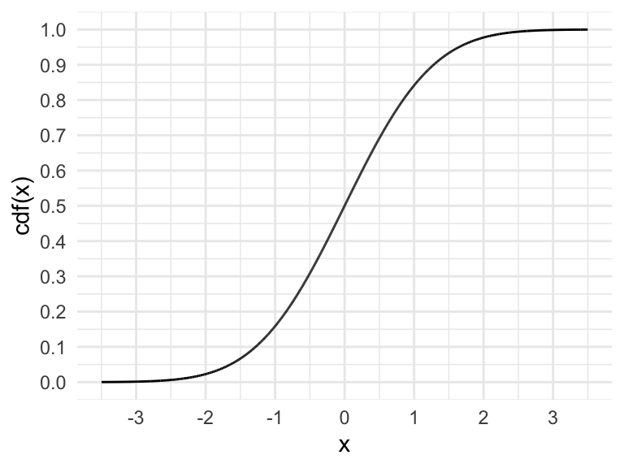
Note how this graph corresponds to the quantities that we have already estimated. When x=0, the cdf is 0.5. When x=-0.5 (graph A), one can eyeball that the cdf is right around 0.3. When x=1 (graph B), one can eyeball that the cdf is around 0.85. Given what we know about what the cdf means, it makes sense that as you move from left to the right (from -3 to 3), the area under the curve (to the left of the cutoff) increases.
We could use these tools of the normal distribution to understand sample distributions for certain variables — a type of univariate analysis. As Chapter 6 discussed, we have to be careful to use variables that are actually amenable to using these tools. That is, we should only apply these types of rules to variables that resemble a normal distribution (symmetric, bell-shaped, unimodal, etc.).
A good example that most readers can relate to is SAT scores.3 SAT scores range from 400 to 1600. The average (mean) SAT score is 1030 and the standard deviation is about 200. The distribution of scores approximates a normal distribution. The graphs below show normal distributions for SAT scores. Note that I have sequenced the x-axis labels in each graph by standard deviations. The mean is 1030. For example, a one standard deviation increase from the mean is a 200 point increase up to 1230. A two standard deviation decrease from the mean is a 400 point decrease down to 630. The graphs facilitate several types of interpretations of SAT scores.
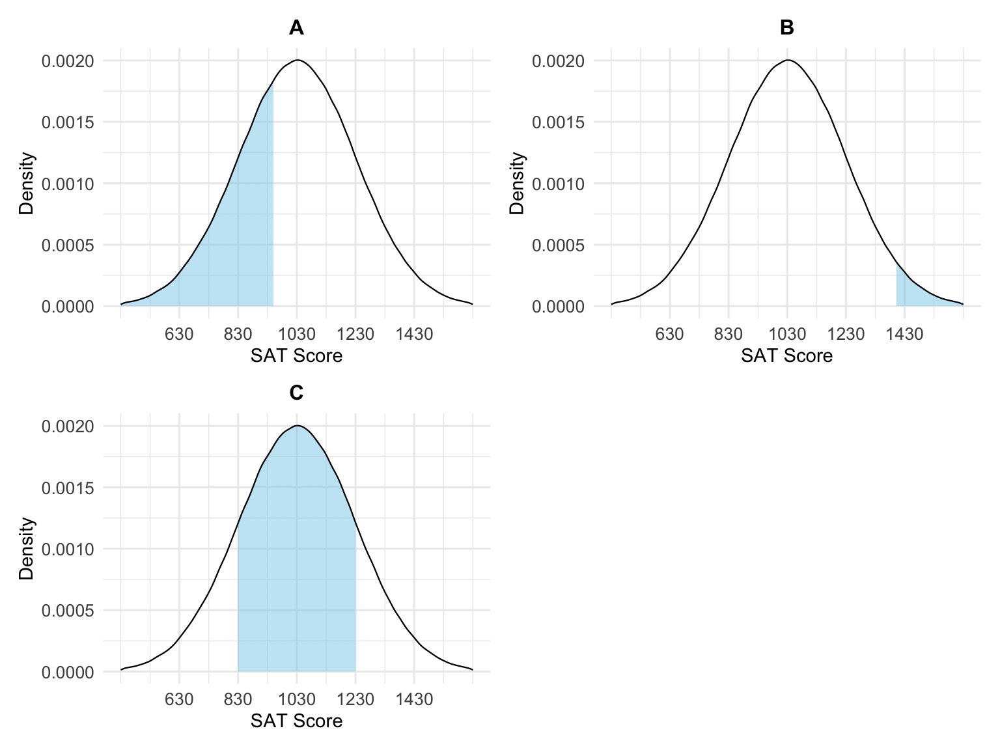
Graph A: Let’s say Bobby scores a 950 on the SAT. What is the probability that someone scores less than or equal to Bobby’s score? Also, what percentile is Bobby at in the SAT distribution?
To answer these questions, we generate the cdf at the 950 cutoff. That will give us the area under the curve less than or equal to a score of 950.
# Graph A:
pnorm(950, mean=1030, sd=200)[1] 0.3445783The probability that someone scores at or below Bobby’s score is about 0.34. Bobby is at the 34th percentile on the SAT distribution.
Graph B: Susie gets a 1400 on the SAT. What is the probability that someone scores higher than Susie? Also, what percentile is Susie at in the SAT distribution?
I need to estimate 1 minus the cdf for the first question and the cdf for the second question.
# Graph B, Q1:
1- pnorm(1400, mean=1030, sd=200)[1] 0.03215677# Graph B, Q2:
pnorm(1400, mean=1030, sd=200)[1] 0.9678432The probability that someone scores higher than Susie is quite low, at about 0.03. Susie is at the 97th percentile in the SAT distribution; about 97% of test-takers scored at or below a 1400.
Graph C: What percentage of test-takers scored within 1 standard deviation from the mean, i.e., between 830 (1 s.d. below the mean) and 1230 (1 s.d. above the mean)?
To answer this question, we need to subtract one cdf estimate from another. The cdf for x=1230 will give us the area under the curve to the left of 1230. However, we want to cut that off at 830. Thus, we simply subtract the cdf for x=830 from the cdf for x=1230:
# Graph C:
pnorm(1230, mean=1030, sd=200) - pnorm(830, mean=1030, sd=200)[1] 0.6826895About 68.3% of SAT test-takers score within 1 standard deviation from the mean. Recall the rules of standard deviation from Chapter 6: “68% of observations fall within about 1 standard deviation from the mean.” The calculation above is exactly where we get that number, 68% (or more precisely, 68.3%). We get this rule of standard deviation by calculating the area under the normal distribution (which is a probability) between 1 s.d. below the mean and 1 s.d. above the mean.
What about the rule that “95% of observations are within about 2 standard deviations from the mean?” Returning to the standard normal distribution, consider this visualization:
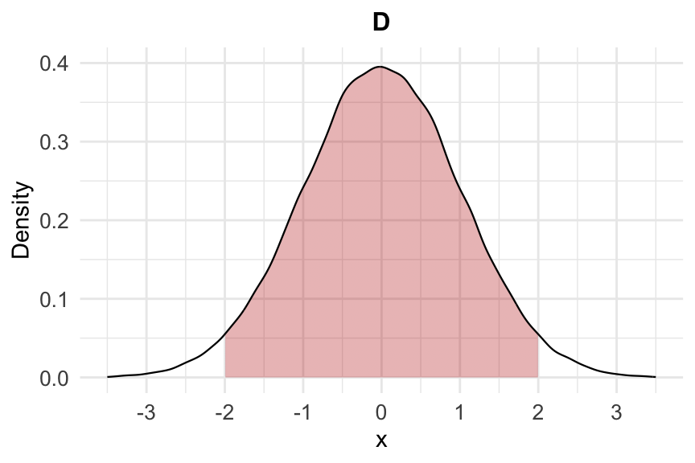
Graph D: To calculate the area under the curve between -2 and 2 (i.e., within 2 standard deviations from the mean), I use a similar command that I used for Graph C:
# Graph D:
pnorm(2) - pnorm(-2)[1] 0.9544997About 95.4% of observations fall within 2 standard deviations from the mean (between -2 and 2). From our rules of standard deviation (Chapter 6), we said that 95% of observations fall within about 2 standard deviations from the mean. Previewing the importance of the 95% confidence interval, how could we estimate the exact values within which 95% of observations fall instead of relying on an approximation of 2?
To do this, we would need to do the reverse of what the cdf gives us via pnorm. We need to work with this graph instead:
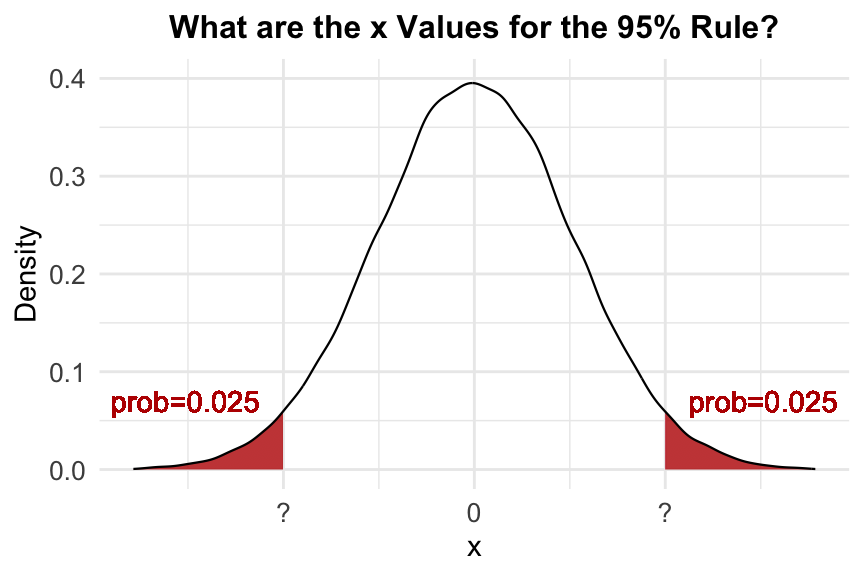
This graph does the opposite of what we have been doing in the prior graphs. In this graph, we have the area under the curve, or the probability estimates, but we need to estimate the x values that are associated with those known probabilities. If we want the exact numbers within which the middle 95% of observations fall, we divide the remaining 5% (100% - 95%) into the left and right tails of the distribution, like the graph illustrates. Now we need to identify these mystery thresholds indicated by a “?” in the graph. For the one in negative territory, that value is simply the cutoff, x, at which 2.5% of the observations are less than this cutoff. For the “?” in positive territory, that value is simply the cutoff, x, at which 97.5% of the observations are less than this cutoff (and 2.5% are greater than the cutoff). Put another way, we need x values for the 2.5th and 97.5th percentiles.
Thus, we need to “reverse engineer” the pnorm command to find the cutoff for a known probability value. The qnorm command does exactly that: It gives us the cutoff, x, for which the given area under the curve is to the left of (less than or equal to) this cutoff. If we plug in 0.025, we will get the value of “?” in negative territory. If we plug in 0.975, we will get the value of “?” in positive territory.
# What are the x Values for the 95% Rule?
# The value of "?" in negative territory:
qnorm(.025)[1] -1.959964# The value of "?" in positive territory:
qnorm(.975)[1] 1.959964These values, then, are -1.96 and 1.96. While Chapter 6 approximated by saying that 95% of observations are within about 2 standard deviations from the mean, we know that the precise value is 1.96 instead of 2; of course, there’s no harm in rounding up and giving an approximation. As the graph below illustrates, we now know that in the normal distribution, 95% of observations fall within 1.96 standard deviations from the mean.
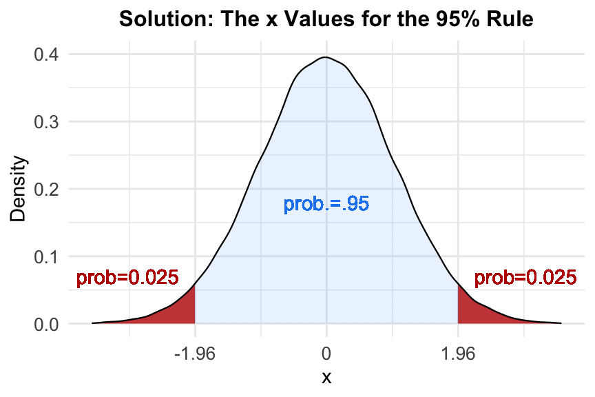
This 1.96 number is a “magic number” in inferential statistics because it forms the cornerstone of the 95% confidence interval that I will discuss in depth below.
We can do the same for the “99% rule.” First, we estimate the low and high x values using qnorm:
# x Values for the 99% rule.
qnorm(.005)[1] -2.575829qnorm(.995)[1] 2.575829In the normal distribution, 99% of observations fall within 2.576 standard deviations from the mean. Recall from Chapter 6 that we rounded way up to “about 3 standard deviations” for the 99% rule.
Then we can graph them like we did for the 95% graph.
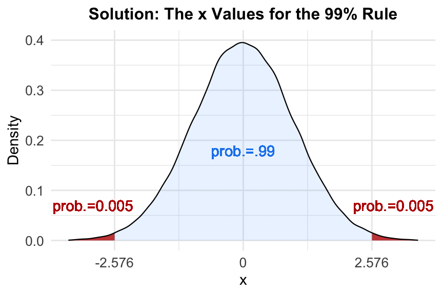
7.1.3 Converting a Normal Distribution to a Standard Normal Distribution: z-scores
When working with the normal distribution in this chapter, we have worked primarily with the standard normal distribution, where the mean=0 and s.d.=1. The units of measurement are in “standard deviation units.” Each additional unit is a standard deviation (which allowed us to clarify the rules of standard deviation in the normal distribution in the discussion above).
These units of measurement in a standard normal distribution are known as z-scores. A z-score of 1 indicate 1 standard deviation above the mean. A z-score of -2 represents 2 standard deviations below the mean.
For a variable that is unstandardized, like the SAT score example, the variable maintains its original measurement units. The SAT scores variable is in its original units (e.g., scores of 800, 1030, 1450, etc.). An age variable would be in years (18 years old, 50, 85, etc.). Presidential approval may be in “thermometer” units (degrees) as is used in the ANES data (0 degrees, 40, 50, 90, etc.). The mean and standard deviations for z-scores are also their units of measurement.
For many topics in inferential statistics, it is useful to convert an “unstandardized” values of a variable (e.g., age or SAT score) to “standardized” values that fall along a standard normal distribution. These “standardized” values are z-scores. Put another way, once our variable is in “z-score” units, it follows a standard normal distribution (with mean=0, s.d.=1).
Below is the well-known formula for converting an unstandardized variable into a z-score, or standardized variable:
\[z_i=\frac{x_i - \bar{x}}{\hat{\sigma}_x}\] where:
- \(x_i\) is a given value of the x variable (i indexes observations from 1 to N)
- \(\bar{x}\) is the mean of the x variable
- \(\hat{\sigma}_x\) is the standard deviation (s.d.) of the x variable
Let’s revisit our SAT example. I simulated a random variable, “sat,” for 1 million observations; it follows a normal distribution with mean of 1030 and s.d. of 200. Below, I summarize the “sat” variable in preparation for converting it to a z-score.
library(skimr)
set.seed(12347)
mysat <- data.frame(id=1:1000000) |>
mutate(sat=rnorm(n = 1000000, mean = 1030, sd = 200))
mysat |> skim(sat)| Name | mysat |
| Number of rows | 1000000 |
| Number of columns | 2 |
| _______________________ | |
| Column type frequency: | |
| numeric | 1 |
| ________________________ | |
| Group variables | None |
Variable type: numeric
| skim_variable | n_missing | complete_rate | mean | sd | p0 | p25 | p50 | p75 | p100 | hist |
|---|---|---|---|---|---|---|---|---|---|---|
| sat | 0 | 1 | 1030.508 | 200.2145 | 46.23848 | 895.7139 | 1030.648 | 1165.644 | 2013.574 | ▁▂▇▂▁ |
Because this a simulation, the mean will not be exactly 1030 and the s.d. will not be exactly 200. They are close, though. I have used up to 5 decimal places so I can get exact values of the mean and standard deviation. The code below creates a new variable, “sat_z,” that converts the original “sat” variable (that was unstandardized) into a z-score (standardized). I simply plug the score variable’s mean and s.d. into the z-score formula from above.
mysat <- mysat |> mutate(sat_z = (sat - 1030.508) / 200.2145)
mysat |> skim(sat_z)| Name | mysat |
| Number of rows | 1000000 |
| Number of columns | 3 |
| _______________________ | |
| Column type frequency: | |
| numeric | 1 |
| ________________________ | |
| Group variables | None |
Variable type: numeric
| skim_variable | n_missing | complete_rate | mean | sd | p0 | p25 | p50 | p75 | p100 | hist |
|---|---|---|---|---|---|---|---|---|---|---|
| sat_z | 0 | 1 | 0 | 1 | -4.92 | -0.67 | 0 | 0.67 | 4.91 | ▁▂▇▂▁ |
As expected, the mean of “sat_z” is 0 and the s.d. is 1.
The table below shows original SAT scores and the corresponding z-score transformations for select values:
| SAT Score | z-score |
|---|---|
| 630.08 | -2 |
| 830.29 | -1 |
| 950 | -0.40 |
| 1030.51 | 0 |
| 1230.72 | 1 |
| 1400 | 1.85 |
| 1430.94 | 2 |
The table shows two specific values from the SAT examples in Graphs A and B from earlier. I will return to those in a moment. It also shows values that illustrate the mechanisms of what z-scores are doing to an unstandardized variable. For example, note that the mean of the “sat” variable was 1030.51. SAT scores are whole numbers, of course, but I include this value to verify that a z-score transforms the mean of “sat” (1030.51) to 0.
In addition, recall that the standard deviation of “sat” is 200.21. That means 1 standard deviation greater than the mean is 1030.51 + 200.21 = 1230.72; 1 standard deviation below the mean is 1030.51 - 200.21 = 830.29. Note how those two values correspond to z-scores of 1 and -1, respectively. The table shows how z-scores transform the “sat” score measurement units into standardized units, or standard deviation units. The table also extends this logic for two standard deviations below the mean (1031.51 - 2 x 200.21 = 630.08) and two standard deviations above the mean (1031.51 + 2 x 200.21 = 1430.94).
Recall the examples of Bobby’s score of 950 and Susie’s score of 1400. We could also answer the earlier questions by converting the students’ scores to z-scores and using the pnorm function with the standard normal distribution default. Table 7.1 includes the z-score transformations for their scores. In the code chunks below, I will use more decimal places than what is reported in the table. First, here are Bobby’s scores and notice in the unstandardized scores, I’m changing the mean and standard deviation to the output reported from the skim command earlier.
# From Graph A: Unstandardized SAT score for Bobby:
pnorm(950, mean=1030.508, sd=200.2145)[1] 0.343802# Use Bobby's z-score instead:
pnorm(-0.4021087)[1] 0.343802And we can see that the results are identical. The probability of someone scoring at or below Bobby’s score is 0.34. We can get this number either of the two ways using pnorm code above.
And now for Susie’s score:
# From Graph B: Unstandardized SAT score for Susie:
1 - pnorm(1400, mean=1030.508, sd=200.2145)[1] 0.03248382pnorm(1400, mean=1030.508, sd=200.2145)[1] 0.9675162# Use Susie's z-score instead:
1 - pnorm(1.845481)[1] 0.0324838pnorm(1.845481)[1] 0.9675162The probability of someone scoring higher than Susie is just 0.03. Susie scored at the 97th percentile.
7.2 Probability Theory and the Central Limit Theorem
This knowledge of the normal probability distribution carries over to another core theoretical theme that serves as a foundation of inferential statistics: the Central Limit Theorem (CLT). This crucial theorem provides us with the infrastructure for making inferences from sample to population and communicating the uncertainty around those inferences resulting from the fact that we are drawing just one sample from an infinite number of possible samples.
While we have discussed probability in terms of the area under the curve of the normal distribution, I now pivot to the more fundamental definition of probability. Probability is a long-run relative frequency. By “long-run,” I mean a probability converges to its expected result only in infinity. We would have to run an infinite number of trials or field an infinite number of random samples from the population in order to estimate the “truth,” or the true population parameter. The key point is that the “truth” — in inferential statistics, a “population parameter” — is a latent, unknown quantity of interest. Samples of data and the theory surrounding inferential statistics allow researchers to target the truth but never directly observe it. Instead, we generate zones of uncertainty within which we are highly confident the truth lies.
Consider a coin-flipping example. Every person ranging from young to old knows that the probability of flipping a heads is 0.5 (assuming that we have a fair, unweighted coin). How do we know that? It is a theoretical result. If you have two outcomes, and a fair coin, the expected value of getting a heads is 0.5 and the same goes for tails. But this expected value assumes a large sample. If we flip the coin 10 times, will we always get 5 heads and 5 tails, as the probabilities suggest? No, we will not because of chance and variance. There’s actually a very small chance we could flip 10 heads out of 10. Once the law of large numbers kicks in, however, the percentage of heads will slowly converge to 50%. Returning to the definition of probability as a long-run relative frequency: “Relative frequency” connotes a percentage or a proportion — in a given number of flips, or trials, this proportion is the number of heads divided by the total number of trials. “Long-run” implies that the relative frequency will not converge to its “equilibrium” (in this case, 0.5) until we calculate those relative frequencies across a very large number of trials.
Let’s simulate the coin-flipping example. Below, I simulate 100,000 coin flips. Each time I flip the coin is a separate “trial.” Each trial is independent from all other trials; the result I get in trial 75 is completely unrelated to the result I get in trial 10,789. Below, I simulate a Bernoulli process, which is a random draw for a binary outcome (in this case, heads or tails). I code a variable called “heads” where 1=heads and 0=tails. The code uses a binomial draw with size=1, which reduces to a Bernoulli — I am flipping one coin at a time and each time I flip is a separate trial. Setting prob=.5 means that this is a random process — each outcome occurs with probability of 0.5. In the last line of code, I calculate a variable, “code,” which is the cumulative mean of heads up to a given trial number. For example, when it gets to trial 10, it takes the average of the 10 draws. Recall that the average of a binary variable coded as 0 or 1 is simply the proportion of outcomes that are 1. Thus, the prob variable calculates a running tally of the proportion of heads that have been flipped up to that trial. This is the “relative frequency” (the number of heads divided by the total number of draws). In the “long-run,” we should see this number converge to 0.5.
set.seed(6429)
coinflips <- rbinom(n = 100000, size = 1, prob = 0.5)
sim_data <- data.frame(trial = 1:100000, heads = coinflips) |>
mutate(prob = cummean(heads))The first graph below shows the results for the first 15,000 trials.
sim_data |>
filter(trial>=10 & trial<=15000) |>
ggplot(aes(x=trial, y=prob)) +
geom_line(color="royalblue", linewdith=.3) +
geom_hline(yintercept=.5, linetype="dashed") +
scale_y_continuous(limits = c(.4, .6), breaks=seq(.3, .7, .1)) +
scale_x_continuous(limits = c(10, 15000), breaks=seq(0, 15000, 1000),
expand = expansion(mult = c(0.003, 0.03))) +
labs(x="\nTrial Number", y="prob(heads)",
title="Coin Flipping Probabilities for the First 15,000 Trials") +
theme_minimal() +
theme(plot.title = element_text(hjust = 0.5, size=12, face="bold"),
axis.title = element_text(size = 11),
axis.text = element_text(size = 10))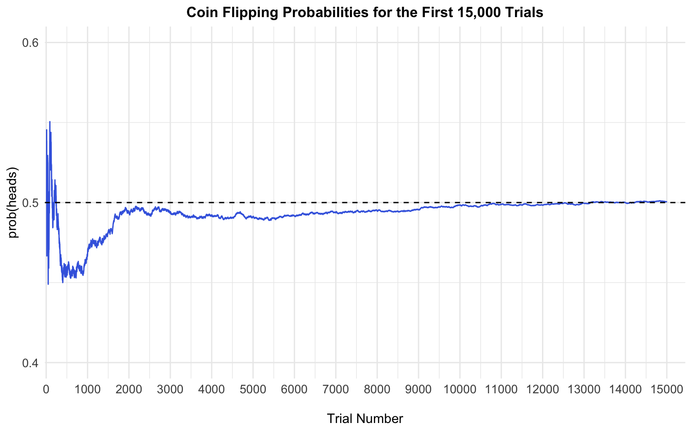
Note the volatility in the probabilities all the way to trial 2,000 where we first observe the probability “settling in” to a probability of 0.5. However, it still takes several thousand trials for the probability to consistently reach 0.5. By about trial 13,000 we seek a semblance of consistence and convergence toward 0.5.
The next graph shows the results up through trial 60,000.
sim_data |>
filter(trial>=10 & trial<=60000) |>
ggplot(aes(x=trial, y=prob)) +
geom_line(color="royalblue", linewdith=.3) +
geom_hline(yintercept=.5, linetype="dashed") +
scale_y_continuous(limits = c(.4, .6), breaks=seq(.3, .7, .1)) +
scale_x_continuous(limits = c(10, 60000), breaks=seq(0, 60000, 5000),
expand = expansion(mult = c(0.003, 0.03))) +
labs(x="\nTrial Number", y="prob(heads)",
title="Coin Flipping Probabilities for the First 60,000 Trials") +
theme_minimal() +
theme(plot.title = element_text(hjust = 0.5, size=12, face="bold"),
axis.title = element_text(size = 11),
axis.text = element_text(size = 10))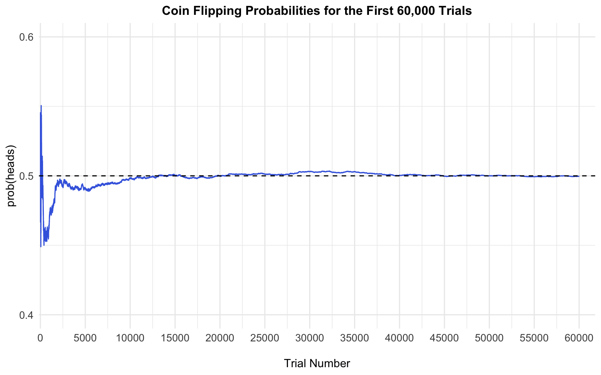
Even though we saw convergence by trial 15,000 in the last graph, this graph shows inconsistencies around trials 30,000 to 35,000. However, by about trial 45,000, the graph illustrates a convergence on a probability of 0.5.
The graphs nicely illustrate multiple themes. Probability converges to its expected result after many many trials — in the “long run.” The underlying population parameter, one might say, is that the probability of a heads is 0.5. We would only truly observe this truth if we conducted an infinite number of trials. Of course, the conclusion from these graphs is that we begin to see convergence to the truth once we are past 50,000 trials.
We can apply this logic to sampling in the inferential statistics context. How do we estimate how close or far we are from the “truth” (the population parameter) for our one sample when the truth can only theoretically be observed if we took an infinite number of samples and averaged across those samples? We have to rely on theory.
In inferential statistics, we make inferences based on the notion of repeated sampling. If we were to take an infinite number of random samples, what would the distribution of the statistics from those samples look like? How would that distribution speak to the population parameter of interest? Recall that these “sample statistics” can be univariate (e.g., sample mean, sample proportion) or bivariate (difference of means, the effect of an independent variable on a dependent variable) in nature. For a univariate example, if we estimated a sample mean of each of the infinite samples we drew, what would the distribution of those sample means look like?
The Central Limit Theorem, the foundation of inferential statistics, gives us the answer. It says that if we were to take an infinite number of samples of the same sample size, the sample statistics from these samples would be normally distributed.
This distribution of statistics based on a hypothetical, infinite sampling process is called a sampling distribution. Note the difference from a “sample distribution,” which is a distribution of a variable, e.g., density plots from Chapter 4, where the units of analysis are observations (individuals in a survey, countries in the V-Dem data, counties, etc.). On the other hand, a “sampling distribution” is a hypothetical distribution of sample statistics; each unit of analysis is a separate sample statistic from a random sample drawn from the population.
The graph below provides a data visualization of the Central Limit Theorem (CLT). Note that this is more of a heuristic for illustrating the intuition behind the CLT. Each blue dot is a sample statistic from a random sample. Imagine each dot is a sample mean of some characteristic in the population. The blue dots, then, represent an infinite number of sample means from random samples. The CLT tells us that those infinite number of sample statistics will form a normal distribution. The x-axis represents variation in the sample statistic estimates — some will be higher, some will be lower, some will be right in the middle. Importantly, the mean of the sampling distribution is the true population parameter, \(\mu\). In this example, it would represent the true population mean. The logic is analogous to the coin-flipping example, then. Convergence to the “truth” occurs in infinity — if we were to draw an infinite number of samples.
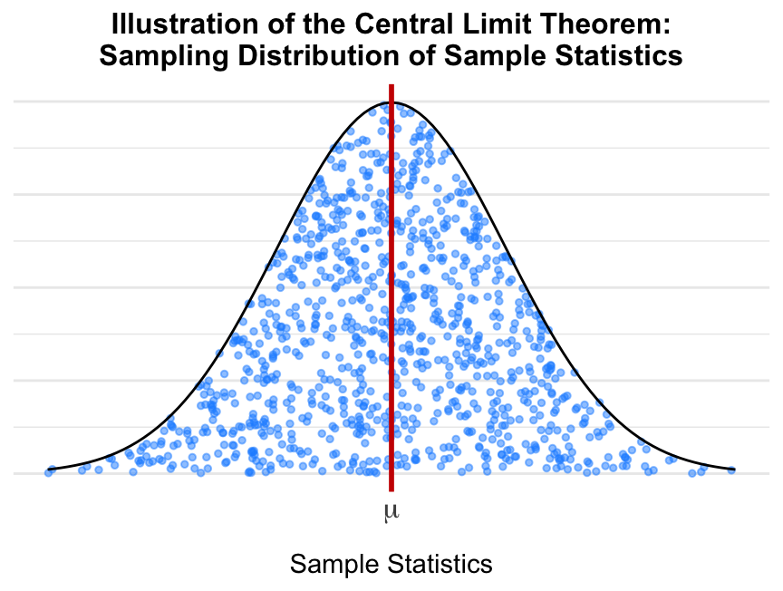
What does dispersion represent in a sampling distribution? Recall from Chapter 6 that I described a standard deviation as a given observation’s average “miss” from the variable’s mean. In a sampling distribution, an “average miss” represents how much a sample statistic differs from the truth, \(\mu\). Consider the following examples:
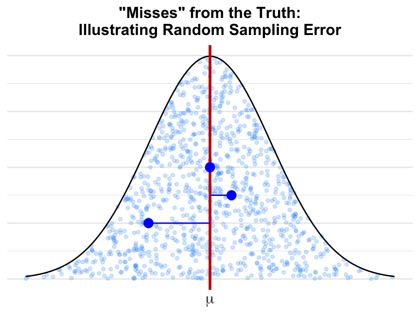
The graph highlights three of the sample statistics. One sample statistic misses to the left by a fairly large amount, while another misses to the right by a smaller amount. The third one hits the bullseye. Even though most of these sample statistics will differ from the truth, they differ only by random chance. Thus, the CLT tells us that dispersion in a sampling distribution is random sampling error, which is the extent to which our sample statistics differ from the truth, or the population parameter.
Herein lies a crux of inferential statistics. We can never observe the truth, which would require an infinite number of random samples. We only get one draw out of an infinite number of samples that could have been drawn. We need to communicate uncertainty that derives from the fact that: (1) we are drawing just one out of an infinite number of samples and (2) that this sample may differ from the truth but we do not know by how much. Luckily, the CLT gives us a framework for communicating uncertainty induced by random sampling error.
Let’s think of the sampling distribution of sample statistics as a standard normal distribution. To reflect the concept of random sampling error, the standard deviation of a sampling distribution gets a special name: standard error. Applying the rules of the normal distribution from the previous section of this chapter, we can say that 95% of sample statistics (coming from random samples) fall within 1.96 standard errors from the truth, or the true population parameter, \(\mu\). The graph below illustrates the logic.
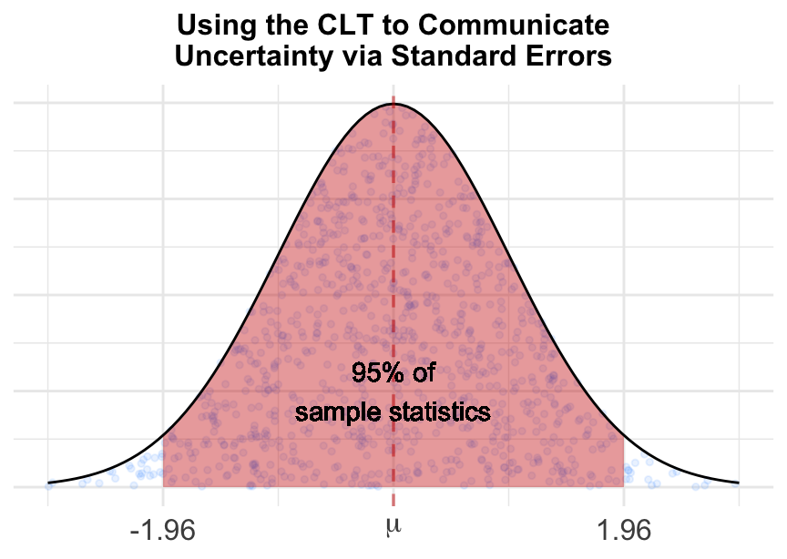
This intuition from the CLT provides us with the logic underlying the 95% confidence interval, which is a workhorse of inferential statistics.
In sum, the CLT provides researchers with the ability to communicate uncertainty about how closely a sample statistic is from the true population parameter. In other words, the CLT gives us a framework to make an inference from sample to population.
7.3 Applied Inferential Statistics: Sample Statistic and Standard Error
The CLT will allow us to make to make probability statements about how closely our sample statistic reflects the true population parameter, even though we can never observe this “truth.” In applied inferential statistics, we use our sample statistic (from our one sample) in conjunction with an estimated standard error, which is a representation of random sampling error, to make inferential claims.
Our degree of uncertainty about a population parameter is random sampling error, which again is the extent to which our sample statistic differs from the truth by random chance. In the CLT illustration above, this variation is theoretical based on an infinite number of random samples. How do we turn this theoretical concept of random sampling error into a standard error that is measurable and based on sample information? What aspects of the variable in our sample are associated with low random sampling error, displayed in Graph A below, and high random sampling error, displayed in Graph B?
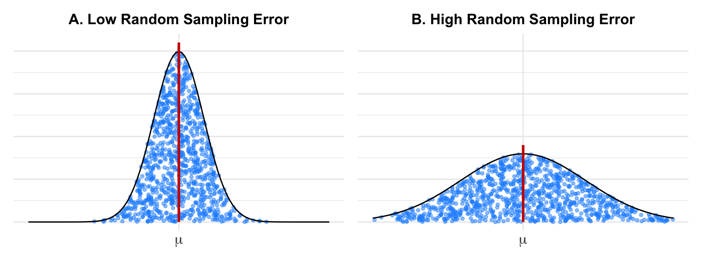
The graphs remind us that a low degree of random sampling error is desirable for making stronger inferences about how closely our sample statistic represents the truth. Let’s consider what aspects of our sample statistic would be associated with such low random sampling error in Graph A versus high random sampling error in Graph B.
In very general terms, a standard error for a univariate sample statistic (e.g., a sample mean) will be a function of a variable’s dispersion (related to standard deviation) and its sample size, N; the dispersion component is divided by the sample size component. For a bivariate sample statistic (like a difference of means or a regression estimate of an effect of x on y), a standard error will be a function of a more complicated variation component involving covariance between two variables and variances of each variable; it will also involve sample size.
I will illustrate the derivation of a standard error via a univariate sample statistic like the sample mean. Dispersion and sample size represent opposing forces on a standard error estimate. Recall the discussion of dispersion from Chapter 6. The higher a variable’s dispersion, or “spread,” the less informative the mean is as a representative value of central tendency. If this statistic comes from a random sample, then all of the hypothetical samples in the sampling distribution (coming from the infinite number of samples) would have a similar degree of dispersion. An increase in this degree of a variable’s dispersion corresponds to a larger degree of random sampling error, while a smaller degree of dispersion in a variable corresponds to a smaller magnitude of random sampling error.
Sample size is an opposing force to a larger dispersion. The coin-flipping simulation reminds us about the “law of large numbers.” The more trials we run, and correspondingly, the more observations we have in our sample, the lower the dispersion (or variance) generally, which makes the mean a more informative signal. When sample size is small, we will have a larger variance around the mean due to, e.g., outliers that may inflate dispersion. A larger and larger sample size offsets the influence of such outliers. Thus, larger sample sizes are associated with small degrees of estimates of random sampling error and thus lower standard error estimates.
We can now define the standard error for a sample mean as:
\[s.e._\bar{x}=\sqrt{\frac{\hat{\sigma}^2}{N}}=\frac{\hat{\sigma}}{\sqrt{N}} \] The equation is simple and relies on the sample standard deviation, \(\hat{\sigma}\), and the sample size, N. Below, I simulate four variables, each of which has a mean of 12, to show how varying \(\hat{\sigma}\) and N changes the standard error. For the first variables below (x1 and x2), I hold N constant at 2,000 and vary the \(\hat{\sigma}\) from 2 to 4. For the last two variables (x3 and x4), I hold \(\hat{\sigma}\) constant (at 3) and vary N from 50 to 5,000. Note that the mean and standard deviation from the simulated samples will not be exactly as what I specified. Instead, these random numbers come from a distribution with those specifications. The coin flipping example teaches us that you do not get complete convergence to such set targets until sample size gets very large. Finally, I use the describe command from the psych package to report the \(\hat{\sigma}\); fast=TRUE suppresses some of the extraneous output. This function also reports the standard error of the mean in the last column, “se.” Users can do the math (divide s.d. by sqrt(N)) to verify the standard error estimate.
library(psych)
library(knitr)
set.seed(7635)
# Change s.d., keep sample size constant
sim1 <- data.frame(x1 = rnorm(n = 2000, mean = 12, sd = 2))
sim2 <- data.frame(x2 = rnorm(n = 2000, mean = 12, sd = 4))
# Change sample size, keep s.d. constant
sim3 <- data.frame(x3 = rnorm(n = 50, mean = 12, sd = 3))
sim4 <- data.frame(x4 = rnorm(n = 5000, mean = 12, sd = 3))
sim1 |> describe(fast=TRUE) |> kable(digits=3)| vars | n | mean | sd | median | min | max | range | skew | kurtosis | se | |
|---|---|---|---|---|---|---|---|---|---|---|---|
| x1 | 1 | 2000 | 11.968 | 2.045 | 11.979 | 4.97 | 18.983 | 14.013 | -0.063 | 0.108 | 0.046 |
sim2 |> describe(fast=TRUE) |> kable(digits=3)| vars | n | mean | sd | median | min | max | range | skew | kurtosis | se | |
|---|---|---|---|---|---|---|---|---|---|---|---|
| x2 | 1 | 2000 | 11.951 | 3.91 | 11.939 | 0.488 | 26.122 | 25.634 | 0.042 | 0.068 | 0.087 |
sim3 |> describe(fast=TRUE) |> kable(digits=3)| vars | n | mean | sd | median | min | max | range | skew | kurtosis | se | |
|---|---|---|---|---|---|---|---|---|---|---|---|
| x3 | 1 | 50 | 11.587 | 3.231 | 11.85 | 6.252 | 18.582 | 12.331 | 0.149 | -0.771 | 0.457 |
sim4 |> describe(fast=TRUE) |> kable(digits=3)| vars | n | mean | sd | median | min | max | range | skew | kurtosis | se | |
|---|---|---|---|---|---|---|---|---|---|---|---|
| x4 | 1 | 5000 | 11.989 | 3.018 | 11.99 | 2.693 | 22.614 | 19.921 | 0.032 | -0.16 | 0.043 |
For \(x_1\) and \(x_2\), notice how the standard error increases as the \(\hat{\sigma}\) increases from about 2.045 to 3.91, but sample size remains the same. The standard error almost doubles in size. We assume that the sampling distribution from which \(\bar{x}_1\) was drawn would have a lower degree of dispersion, or random sampling error, than the sampling distribution from which \(\bar{x}_2\) was drawn due to the smaller standard deviation in \(x_1\).
For \(x_3\) and \(x_4\), we see a large difference in standard errors when N is 50 versus 5,000. We get a much smaller standard error for N=5,000. Once again, we assume that the respective sampling distributions from which these sample means were drawn would differ due to the sample size difference.
The remainder of this chapter engages in applied inferential statistics exercises. The following rule applies to any inferential statistics problem where one seeks to make an inference from sample to population.
All inferential statistics problems require two pieces of information:
Sample statistic (e.g., sample mean, sample percentage, estimated causal effect)
Standard error of that sample statistic
7.3.1 95% Confidence Interval for Univariate Statistics
A common form of communicating uncertainty induced by random sampling error in our sample statistic is by estimating a 95% confidence interval, which is derived from the CLT result discussed earlier. Recall that 95% of the sample statistics fall within 1.96 standard errors from the “truth,” or the true population parameter. Recall, however, the reality that we only get to observe 1 sample statistic — from the 1 sample out of an infinite number of random samples. We may get lucky and hit the bullseye. But what if our sample statistic is one of the misses? How can we make an inference about our sample relative to the “truth” that would capture sample statistics that miss the truth both by a little (less than 1 standard error from the truth) or by a lot (more than 1 standard error)?
The 95% confidence interval gives us a “truth zone,” or a range of values within which we are 95% confident that the truth falls. The equation for the 95% confidence interval (“95% CI”) is included below:
\[95\%~CI = sample~statistic~\pm~1.96\times SE_{ss}\]
I use the generic equation for any sample statistic (univariate or bivariate). Note that \(SE_{ss}\) denotes the standard error for the sample statistic (subscript “ss”). Notice how the equation explicitly incorporates uncertainty induced by random sampling error. We are conceding that our sample most likely misses the truth. The next best thing is to use the CLT and the rules of the normal distribution to estimate a range within which the truth falls. We cast our net widely enough — specifically, plus or minus 1.96 standard errors — to “catch” the truth, or \(\mu\).
The four graphs below illustrate this logic for four different sample statistics that we may have drawn. I present sampling distributions from the CLT illustration showing how 95% of sample statistics fall within 1.96 standard errors from the truth, \(\mu\), or the true population parameter. The blue dot in each graph is a sample statistic from one of the infinite number of random samples in the sampling distribution. The bounded blue line in each graph is the 95% confidence interval for that sample statistic using the equation above for the 95% CI.
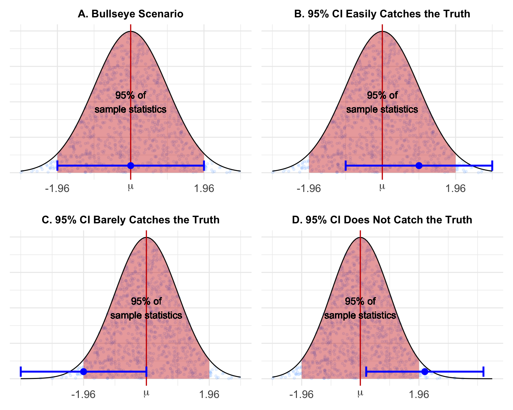
Graph A shows that bullseye scenario where we were lucky enough to draw a sample whose sample statistic is the same as the true population parameter. In this scenario, our 95% confidence interval obviously includes the truth, \(\mu\). Note how our calculated confidence interval (in blue) perfectly (and logically) corresponds with the red zone for the 95% of the samples that fall within which 1.96 of \(\mu\). We are (easily) 95% confident that the truth, \(\mu\), falls within our confidence interval.
In Graph B, the sample statistic (blue dot) from our one sample is within the red zone but it misses the truth. The 95% CI for this sample statistic easily includes, or “catches,” the truth, \(\mu\).
Graph C provides the “edge case.” Our sample statistic falls right on the border of the red zone. It is right at the -1.96 mark, which we know is the border of the range within 95% of random samples fall. This graph perhaps best illustrates the logic of the 95% CI. Even though the sample statistic from this 1 random sample falls 1.96 standard errors away from the truth (a large amount of random sampling error), our calculated 95% CI for this sample statistic still catches the truth — though barely. Graph C shows us outer limits of the 95% confidence interval: We are just barely 95% confident — but 95% confident nonetheless — that the truth, \(\mu\), falls within our confidence interval.
Graph D shows the limits of the 95% confidence interval, or a case of “bad luck.” In this hypothetical scenario, we had the bad fortune of drawing a random sample from outside of the 95% red zone. Once again, we can never know where we are in the range of a hypothetical sampling distribution. Our sample statistic in this case is just beyond 1.96 standard errors above the truth, \(\mu\). When we calculate our 95% CI for this sample, the CI does not include \(\mu\). This example illustrates one of the risks in inferential statistics (though remote) of relying on a 95% confidence level. It will capture most random samples, but not all. One would certainly say that 95% represents very good odds. But it also means that we will have to tolerate misses, like in Graph D. While the 95% CI nicely captures a “truth zone” within which we are 95% confident that the truth falls, there is also a 5% chance that our interval will not catch the truth.
Graph D captures the idea of using a higher confidence level, like the 99% level, in order to cast a wider net with hopes of catching the truth. We already know that 95% of sample statistics fall within 1.96 standard errors from the mean. Recall from above that the critical values for the “99% rule” are -2.576 (for the 0.05th percentile) and 2.576 (for the 99.5th percentile). 99% of sample statistics are within 2.576 standard errors from the truth, \(\mu\). Thus, we can define the 99% confidence interval as:
\[99\%~CI = sample~statistic~\pm~2.576\times SE_{ss}\]
First, note that in exchange for a higher confidence level, we get a larger, wider confidence interval. Our “truth zone” is larger in a 99% CI compared to a 95% CI, implying greater uncertainty. On the other hand, we are almost completely confident (at 99%) that the truth falls within that larger range.
The graph below reshows the example of the sample statistic from Graph D above but using a 99% confidence interval instead.
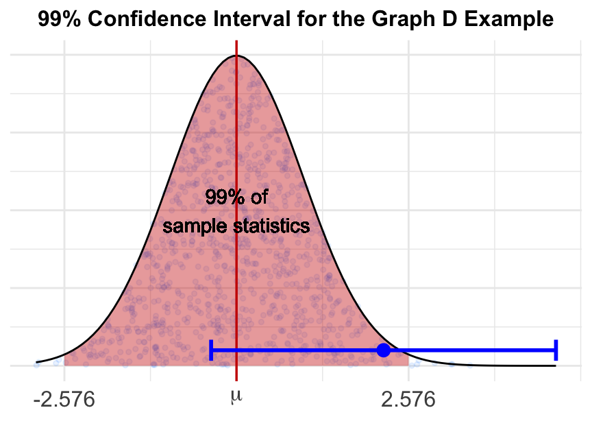
Now, when using a 99% CI for this sample statistic (the blue dot), the interval includes, or catches, the truth, \(\mu\). Once again, the 99% confidence interval for this sample statistic is wider than the 95% confidence interval. But at 99% confidence, we are more certain that the truth falls within the 99% CI relative to the 95% CI.
7.3.2 Summarizing Interpretations of the 95% Confidence Interval
The 95% confidence interval is prominent in applied inferential statistics settings. While some researchers will move to the 99% CI, most stick with the 95% CI (and the 95% confidence level more generally). Below I summarize common ways of interpreting the 95% CI that draw on the mechanisms and logic discussed above:
Common interpretations of the 95% confidence interval:
If we were to draw an infinite number of samples (of size N), the population parameter (the “truth”) would fall within our calculated interval 95% of the time.
There’s a 95% chance that the population parameter (the “truth”) would fall within our 95% confidence interval and only a 5% chance that it would fall outside of our 95% confidence interval.
We are 95% confident that the population parameter (the “truth”) falls between [lower bound of the 95% CI] and [upper bound of the 95% CI].
Connections to margin of error: Recall from the introduction that political junkies who follow polling (e.g., during a presidential election campaign) are actually inundated with inferential statistics. Media and survey firms often report the “margin of error” (e.g., plus or minus 3%) associated with a poll and result. This margin of error is the \(\pm\) portion of the 95% CI equation:
\[margin~o\!f~error=\pm~1.96\times SE_{ss}\]
I will return to margin of error in the examples below.
7.3.3 Student’s t-Distribution as a Special Case of the Normal Distribution
Before I conduct some univariate examples for the 95% CI, I address an area in inferential statistics concerning what is known as “Student’s t-distribution.” This distribution is a special case (a “subset”) of the normal distribution we have been discussing this entire chapter.
The key difference relates back to sample versus population, or a recognition that we have a “finite sample.” Recall that the two key parameters of a normal distribution are mean and variance (and s.d. equals the square root of the variance). When we calculate the standard errors above for purposes of estimating a 95% CI, we assume in the normal distribution that we know what the population variance is, regardless of the sample size. In reality, and from the simulation of varying sample sizes above (where the s.d. was different across those samples), we know that the samples with varying Ns will yield different standard deviations. The Student’s t-distribution accounts for this aspect by imposing a sort of “penalty” for small sample size. However, as N gets larger and larger, the t-distribution converges to the normal distribution.
Student’s t-distribution imposes a penalty by directly incorporating sample size and using an adjusted sample size known as degrees of freedom (df). Degrees of freedom generally equals N - k, where k represents the number of parameters we are estimating. In the case of a standard error for a sample mean, df=N-1. The 1 is for the estimation of the sample mean.
While z-scores are associated with the normal distribution, t-scores are associated with Student’s t-distribution. To estimate “critical-t” scores analogous to the z-scores we calculated above, we can use the pt and qt commands in RStudio, which correspond to pnorm and qnorm, respectively.
Let’s say we have a sample of 1,000 individuals and we want to calculate a 95% CI for a sample mean. In this case, df=999 (i.e., N-1). To calculate the 2.5th and 97.5th percentiles for the t-distribution under these circumstances, we can use qt below. Note that I first enter the probability value, which again relies on the cdf, or the area under the curve to the left of a particular value. qt will give me the t-value associated with these particular areas.
qt(.025, 999)[1] -1.962341qt(.975, 999)[1] 1.962341At N=1,000, the critical-t value for the 95% CI would be 1.962, which is just 0.002 (two one-thousandths) greater than the critical z-value of 1.96. Thus, at N=1,000, which is a common sample size in many commercial public opinion polls, the critical t-value comes very close to the critical z-value.
For even smaller samples, however, more divergence occurs:
qt(.975, 499)[1] 1.964729qt(.975, 99)[1] 1.984217qt(.975, 49)[1] 2.009575These three critical-t values are associated with sample sizes of 500, 100, and 50. As can be seen, as sample size, and degrees of freedom, decrease in size, the critical t-values for the 95% CI increasingly diverge from 1.96.
The graph below generalizes these results. I created a dataset where each observation represents a degrees of freedom value ranging from 50 to 10,000 in increments of 1. For each degrees of freedom value, I generate a critical t-value at the 95% confidence level, like I did above for select degrees of freedom values.
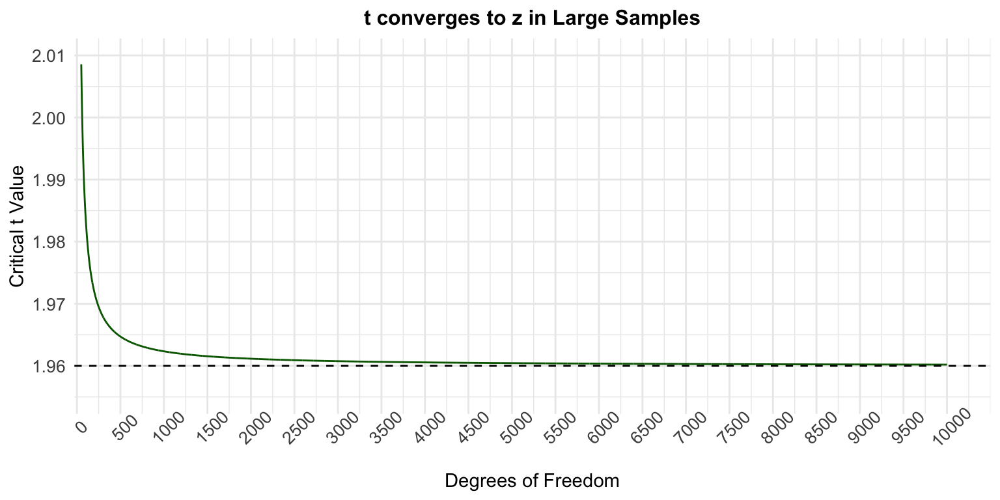
The graph contains a horizontal dotted line for 1.96, the critical z-value for the 95% confidence interval. The green line shows the critical-t value as a function of increasing degrees of freedom values. The graph clearly shows that t quickly converges to z once we get to df=500 and especially by 1000. By the time df gets to 5000, t and z are almost identical. In infinity, t and z are the same. Most survey firms will use the critical z-score of 1.96 instead of the exact critical t-value for this very reason: By the time we get to N=1,000 (a common sample size for commercial polls), the critical t-value and the critical z-value are almost identical (only 0.002 apart, as discussed above).
7.3.4 Univariate Examples: Sample Means and Sample Proportions
Readers can calculate 95% CIs for the simulated variables (from above) with varying standard deviations and sample sizes. Upon calculating those CIs, notice the associated changes in the width of the intervals. As standard deviation increases, the width of the CI increases as well. As sample size increases, the width of the CI decreases. A smaller standard deviation and a larger sample size each decrease the width of this “truth zone,” once again, the range within which the truth falls with 95% confidence. The narrower this interval, the lower the degree of uncertainty we have about our sample statistic.
The first example of a 95% CI for a sample mean involves the idea of “affective polarization,” which measures individual variation in how much more one likes their own party relative to the opposite party. The measure captures in-party bias versus out-party antipathy (Iyengar et al. 2019). The measure is typically used for Democrats and Republicans only. It uses the “thermometer ratings” for the Democratic and Republican parties. The measure is: in-party thermometer rating minus out-party thermometer rating. For Democrats, the measure is Democratic thermometer rating minus Republican rating, and vice versa for Republicans. The code below implements the measure via the variable, “affpol.” For nearly every respondent, the measure ranges from 0 to 100, where 0=no affective polarization and 100=extremely high polarization. One quick note: A small number of observations have values less than 0, which could reflect some respondents misreporting or misanswering questions. I filtered out responses where “affpol”<0.
library(haven)
anes <- read_dta("https://blbartels.github.io/dataps/anes24.dta")
anes <- anes |> mutate(partyid = if_else(V241227x<0, NA, V241227x),
demtherm = if_else(V241166<0, NA, V241166),
reptherm = if_else(V241167<0, NA, V241167))
anes <- anes |>
mutate(party3 = case_when(
partyid>0 & partyid<4 ~ 1,
partyid == 4 ~ 2,
partyid>4 ~ 3))
# Affective polarization
anes <- anes |>
mutate(affpol = if_else(party3==1, demtherm-reptherm, NA),
affpol = if_else(party3==3, reptherm-demtherm, affpol),
affpol = if_else(affpol<0, NA, affpol))
anes |> select(affpol) |> describe(fast=TRUE) |> kable(digits=3)| vars | n | mean | sd | median | min | max | range | skew | kurtosis | se | |
|---|---|---|---|---|---|---|---|---|---|---|---|
| affpol | 1 | 4894 | 54.951 | 29.659 | 55 | 0 | 100 | 100 | -0.242 | -0.92 | 0.424 |
Note that I also include summary statistics of the “affpol” variable using describe, which reports the standard error of the sample mean as well. First, the mean is about 55, while the s.d. is about 29.7. The variable is slightly negatively skewed, but the mean and the median are basically the same. An average of 55 is quite a high level of affective polarization. To calculate a 95% CI for the sample mean, I use this equation:
\[95\%~CI = 54.951~\pm~1.96\times0.424=[54.120,~55.782]\] Thus, we could conclude that with 95% confidence, the true population mean of affective polarization falls between 54.12 and 55.78. Note that our sample size of 4,894 gives us a tight confidence interval. Note also that I use the critical z-value of 1.96 associated with the 95% CI. The critical t-value would be very close:
qt(.975, 4893)[1] 1.960449We can also use the 95% CI for a sample proportion, which is common in commercial polls for, e.g., predicted vote choice. In the run-up to elections, a flurry of poll results are released in order to reflect where the presidential race stands. Consider these two polls from late October and early November 2024:
- Poll 1: Trump 49.0%, Harris 47.2%; N=2463 (Atlas Intel Poll)
- Poll 2: Trump 48%, Harris 50%; N=973 (Reuters/Ipsos)
With a race this close, we are naturally going to see poll results with a different candidate leading. We know from the CLT that we are drawing each sample out of an infinite number of samples. Variations in the results are a function of random sampling error. When we have percentages like this, the relevant sample statistic is a sample proportion, or \(\hat{p}\). The equation for the standard error (SE) of a sample proportion is:
\[SE_\hat{p}=\sqrt{\frac{\hat{p}(1-\hat{p})}{N}}\] Sampling variability will be high when there’s a 50/50 split, while it will be low for, e.g., a 95/5 split. For purposes of estimating a 95% CI, the sample statistic is the proportion, while the SE is from above. For the first poll, we can calculate the SEs for each candidate as follows:
# Poll 1
# SE for Trump proportion:
sqrt( (.49*(1-.49)) / 2463 )[1] 0.01007282# SE for Harris proportion:
sqrt( (.472*(1-.472)) / 2463 )[1] 0.01005902The 95% CIs for the first poll can then be calculated using the formula below:
\[95\%~CI(Trump) = 0.49~\pm~1.96\times0.01 = [0.470,~0.510]\] \[95\%~CI(Harris) = 0.472~\pm~1.96\times0.01 = [0.452,~0.492]\] Note that the margin of error for each proportion is about 0.02, or 2% (i.e., 1.96 x 0.01). From this poll, we could conclude with 95% confidence that Trump may have majority support in the public. We can conclude that because >0.5 (>50%) is included in the “truth zone.” Thus, it is possible that Trump has majority support in the public. On the other hand, we could not conclude the same for Harris’ vote share from this poll since a number >0.5 is not included in her 95% CI. We would be 95% confident that Harris’s support is less than 50%.
The SEs for sample proportions from Poll 2 are:
# Poll 2
# SE for Trump proportion:
sqrt( (.48*(1-.48)) / 973 )[1] 0.01601644# SE for Harris proportion:
sqrt( (.50*(1-.50)) / 973 )[1] 0.01602926Note the larger SEs in poll 2 due to the smaller sample size, N.
The 95% CIs are:
\[95\%~CI(Trump) = 0.48~\pm~1.96\times0.016 = [0.449,~0.511]\]
\[95\%~CI(Harris) = 0.50~\pm~1.96\times0.016 = [0.469,~0.531]\] With a smaller sample size in poll 2, we also see wider confidence intervals. The margin of error, at about 3%, is also larger in this poll. Here, we can conclude that both Trump and Harris may or may not have majority support in the public. In short, the degree of statistical uncertainty present in this poll restricts us from concluding that either candidate definitively has either majority support or a lack thereof. We simply do not know.
What is the critical test of whether the race is a “statistical tie?” Do we have enough statistical evidence to conclude that one candidate is leading the other? To test this proposition for each poll, we need to calculate the difference in proportions between the two candidates. In poll 1, that difference is 0.018, or 1.8%. In the second poll, that difference is 0.02, or 2%. To generate a 95% CI for this difference, we need a standard error for that difference. In this case, the SE for the difference in proportions is:
\[SE_{di\!f\!f}=\sqrt{\frac{\hat{p}_1 + \hat{p}_2 - (\hat{p}_1 - \hat{p}_2)^2}{N}}\] We will equate \(\hat{p}_1\) with Trump’s proportion and \(\hat{p}_2\) with Harris’s proportion (though it doesn’t matter which is which). Here are the SEs for the differences for each poll:
# SE for difference in poll 1:
sqrt( (.49 + .472 - (.49 - .472)^2) / 2463 )[1] 0.01975978# SE for difference in poll 2:
sqrt( (.48 + .50 - (.48 - .50)^2) / 973 )[1] 0.03172985Now we can calculate the 95% CIs for the differences in proportions for each poll:
\[95\%~CI_{di\!f\!f,~poll1}=0.018~\pm~1.96\times0.020 = [-0.021,~0.057]\] \[95\%~CI_{di\!f\!f,~poll2}=0.02~\pm~1.96\times0.032 = [-0.043,~0.083]\] The magic number for interpreting these confidence intervals for the difference in Trump versus Harris’s proportions is 0. Consider poll 1 first. The sample proportions had Trump leading Harris. Think of the hypothetical sampling distribution for that gap of 0.018. If we were 95% confident that Trump was leading Harris, then the lower bound of the 95% CI would be greater than 0. In other words, we would have been 95% confident that the difference in proportions was greater than 0. However, the number 0 is within this 95% CI, meaning that 0 is one of the potential “truth” possibilities. This is precisely what makes the race a “statistical tie”: 0 falls within the 95% CI. At 95% confidence, we do not have enough statistical evidence that Trump is leading Harris in this poll.
The same goes for poll 2. While Harris was leading Trump by 2%, the 95% CI includes 0, meaning we are not 95% confident that Harris’s lead is greater than 0. With 95% confidence, the true difference could be between 4% in favor of Trump or 8% in favor of Harris. Note once again the consequence of sample size: Poll 1, with the larger sample size, has a narrower CI than poll 2.
7.4 Hypothesis Testing for Bivariate Comparisons
The Trump versus Harris examples highlight another critical concept in inferential statistics known as statistical significance. This concept is directly related to confidence intervals and statistical uncertainty induced by sampling error. In the case of the Trump versus Harris polls, the conclusion of a “statistical tie” is the same thing as saying that the difference in proportions between Trump and Harris is not statistically significant. When researchers invoke this term, it is relevant to an (aforementioned) “magic number,” like 0 in this case. That is, since our 95% CIs include 0 (which is the conclusion that there’s no difference between Trump and Harris’s proportions), we would conclude that the difference in proportions is not significantly greater than 0. That conclusion comes directly from the fact that the lower bound in each CI is less than 0 (or, equivalently, that 0 falls within the interval). If 0 were not in the CI, we would conclude that the difference in proportions is statistically significant — that this difference is significantly greater than 0.
In hypothesis testing, researchers make clear that this magic value of 0 is a comparison to an alternative expectation that the difference is not equal to 0. We will use hypothesis testing here to test bivariate relationships between an independent variable and a dependent variable. In these examples, I will use a binary independent variable and an interval dependent variable to conduct a group comparison: Does one group have a higher or lower level of the dependent variable than other group? Or is that difference “null” or 0? The value of 0, in particular, forms the basis of the “null hypothesis,” while the nonzero value (the groups differ in the level of the dependent variable) forms the basis of the “alternative hypothesis.”
I will begin with an example of whether frequent social media users have higher levels of affective polarization (the topic discussed above) than non-frequent social media users. One might expect such a relationship because increasing exposure to social media may lead one to view more polarizing messages about the parties. This would form the basis of our research hypothesis:
Research Hypothesis: In comparing individuals, as social media consumption increases, affective polarization will increase as well.
The null hypothesis is that there is no relationship between social media consumption and affective polarization. While my research hypothesis states the direction of the hypothesis, I will broaden out the alternative hypothesis to: “there is a relationship.” Essentially, I am saying that the relationship could be negative or positive. This type of test is called a “two-tailed” hypothesis test, which I will explain in more detail below. Given that my research hypothesis states a direction of the relationship, I could also conduct a “one-tailed” hypothesis test. Once again, however, I will conduct the two-tailed variety below.4 Next, I go through the 5 core steps in hypothesis testing. These steps force the researcher to go through a systematic process to conclude whether the posited effect of an independent variable on a dependent variable is statistically significant. Hypothesis testing is central to inferential statistics: From our one sample, do we have sufficient evidence, and with high confidence, to make an inference that this relationship holds in the population?
7.4.1 Setting up the Null and Alternative Hypotheses
To set up the null and alternative hypotheses, we first need to define what the population parameters are. In this case, I will define two groups: Low social media consumption and high social media consumption. Each group has a true average, or mean, level of affective polarization in the population. We will use the notation for a population mean, \(\mu\). The population mean for the low consumption group is \(\mu_L\); for the high consumption group, it is \(\mu_H\). The population parameter that is of core interest in this hypothesis is the difference between those population means: \(\mu_H - \mu_L\). This is sometimes referred to as a “difference of means test.” The test directly follows the logic of the mean comparison from Chapter 4 and Chapter 6. To test whether there is a relationship between two variables, we evaluate whether the mean of the dependent variable is higher or lower for one value of the independent variable compared to another value of the independent variable. In hypothesis testing, of course, we also want to make an inference to the population based on the sample.
Thus, we can define our null hypothesis with notation \(H_0\) (the subscript 0 for “null” or no effect) and our alternative hypothesis with notation \(H_A\).
\[H_0: \mu_H - \mu_L=0\] \[H_A: \mu_H - \mu_L\ne0\] The null hypothesis says there is no effect of social media consumption on affective polarization in the population, while the alternative hypothesis says there is a relationship.
7.4.3 Test Statistic
Like confidence intervals, a test statistic gives us a formal test for rejecting or failing to reject a null hypothesis. This is where bring information in about our sample into the mix. Recall that the two pieces of information we need in every inferential statistics problem is a sample statistic and a standard error for that sample statistic. Like a confidence interval, a test statistic incorporates both aspects:
\[Test~statistic=\frac{H_a~value - H_0~value}{SE}\] The equation bears similarity to the equation for standardizing a variable, which generated z-scores that fell along a standard normal distribution. The same goes for this equation: A test statistic falls along either a standard normal or standard Student’s t-distribution. This allows us to use the rules of the normal (or Student’s t) distribution to make an inference from sample to population.
In the example of social media and affective polarization, the research hypothesis, \(H_a\), value will be the difference in affective polarization between low and high social media users; this estimated difference will be our relevant sample statistic. The null hypothesis, \(H_0\), value is 0, i.e., that there is no difference between groups. Notice what this equation is doing: It is putting the difference between the \(H_A\) and \(H_0\) values on the standard normal distribution. Under the 95% confidence level, our task is to evaluate whether the \(H_A\) value (our hypothesized effect) is at least 1.96 standard errors away from the \(H_0\) value (0, or the null value), which is basically the definition of statistical significance. If this condition is met, then we can conclude that the effect we have measured in our sample is “statistically significant,” i.e., it is significantly different from 0. And on the flip side, related to alpha, the probability of committing a type-1 error (false-positive) would be less than 0.05.
At this step, we need to get into the data. The code below recodes an ANES variable, V242406, which measures how many days per week individuals use social media. I recode the variable into a binary measure, “socialmed,” where 0 = less than 5 days per week and 1 = 5 or more days per week.
library(questionr)
anes <- anes |>
mutate(socialmed = if_else(V242406>=5, 1, NA),
socialmed = if_else(V242406>=0 & V242406<=4, 0, socialmed))
freq(anes$socialmed, total=TRUE) n % val%
0 3248 58.8 68.9
1 1469 26.6 31.1
NA 804 14.6 NA
Total 5521 100.0 100.0When filtering out missing data, about 31% are frequent social media users, and about 69% are more infrequent social media users. Now, the code below calculates the mean values of affective polarization (“affpol” analyzed earlier) for each of these social media categories.5
# Mean of affpol for low social media group
anes |> filter(socialmed==0) |> select(affpol) |>
psych::describe(fast=TRUE) |> kable(digits=3)| vars | n | mean | sd | median | min | max | range | skew | kurtosis | se | |
|---|---|---|---|---|---|---|---|---|---|---|---|
| affpol | 1 | 2853 | 53.715 | 29.731 | 55 | 0 | 100 | 100 | -0.188 | -0.985 | 0.557 |
# Mean of affpol for high social media group
anes |> filter(socialmed==1) |> select(affpol) |>
psych::describe(fast=TRUE) |> kable(digits=3)| vars | n | mean | sd | median | min | max | range | skew | kurtosis | se | |
|---|---|---|---|---|---|---|---|---|---|---|---|
| affpol | 1 | 1368 | 57.988 | 28.015 | 60 | 0 | 100 | 100 | -0.383 | -0.643 | 0.757 |
Note that from a descriptive statistics standpoint, this analysis is a mean comparison. The results show that as social media usage increases, affective polarization increases, too. Frequent social media users are 4.27 points higher (i.e., 57.988 - 53.715) on the affective polarization measure than infrequent users. This fits with our research hypothesis. Thus, our estimated \(H_A\) value is 4.27. Our \(H_0\) value is 0. Now we need a standard error for the difference measure, 4.27. In a difference of means test, there are two SE measures depending on whether one assumes equal are unequal variances between the two groups. We can see from the descriptive output that the standard deviations are not that far apart. The SE when we assume equal variances is:
\[SE_{di\!f\!f} = \sqrt{\hat\sigma_p^2 \left(\frac{1}{N_1} + \frac{1}{N_2}\right)}\] Here, we use a “pooled” variance (s.d. squared), \(\hat\sigma_p^2\), between the two groups. This equation is:
\[\hat\sigma_p^2 = \frac{(N_1 - 1)\hat\sigma_1^2 + (N_2 - 1)\hat\sigma_2^2}{N_1 + N_2 - 2}\]
The SE equation when we assume unequal variances between groups can be written more simply in terms of the SEs of each the sample means:
\[SE_{di\!f\!f} = \sqrt{SE_1^2 + SE_2^2}\]
To retrieve all the information we need for a difference of means test, we can either use the t.test command from base R or the t_test command from the rstatix package. The “t” in “t test” is related to Student’s t-distribution. The test statistic in this test follows Student’s t-distribution, so the test assumes the “finite sample” logic discussed earlier. Recall that t converges to z (from the normal distribution) in large samples. Below, I use the t.test command assuming both equal variances and unequal variances. Note that I save the t-test output as “data objects.” The t.test output unfortunately does not include the SE estimate, but it is stored in the saved data object as “stderr.” To print those SEs, users can enter the saved data object followed by “stderr” (separated by $).
# Assume equal variances:
tt_e <- t.test(affpol ~ socialmed, data=anes, var.equal=TRUE)
# Assume unequal variances:
tt_u <- t.test(affpol ~ socialmed, data=anes, var.equal=FALSE)
# Standard error of the difference, equal variances
tt_e$stderr[1] 0.9598119# Standard error of the difference, unequal variances
tt_u$stderr[1] 0.93996The output shows that the standard errors are very similar: 0.96 when equal variances are assumed and 0.94 under the assumption of unequal variances. I will proceed under the equal variances assumption. The test-statistic, t, is estimated as:
\[test~statistic~(t)=\frac{H_a~value - H_0~value}{SE}=\frac{4.274-0}{0.960} = 4.453 \] Since t=4.453 far exceeds 1.96, we know that our sample statistic, 4.274 (the difference in means), is more than 1.96 standard errors greater than the null value of 0. (Note that the critical t value that would be analogous to the critical z = 1.96 is 1.9605; via qt(.975, df=4719). Spoiler alert: This information alone is sufficient to conclude that the difference in affective polarization between low and high consumption social media users is statistically significant. However, step 4 below goes through the explicit decision rule for rejecting or failing to reject the null hypothesis.
We could also use this information from the test statistic to estimate a probability that our sample statistic represents a type 1 error (false positive). Since we are operating in a “two-tailed” testing space, this probability would equal the area under the normal curve to the right of our positive test statistic, t, and to the left of our negative test statistic, -t. In our example, it would be the area under curve greater than 4.453 and less than -4.453. In inferential statistics, researchers call this total probability value a p-value. Thus, the p-value for our calculated test statistic could be calculated as follows:
# Area under the curve greater than 4.453:
1 - pt(4.453, df=4719)[1] 4.331717e-06# Area under the curve less than -4.453
pt(-4.453, df=4719)[1] 4.331717e-06# p-value (total): Add up prior two values (given two-tailed test):
(1 - pt(4.453, df=4719)) + (pt(-4.453, df=4719))[1] 8.663434e-06Given the very large t-value, these p-values are correspondingly very small. RStudio uses notation, “e-06,” which means to move the decimal place over 6 places to the left. That means the first two values are 0.00000433. The p-value, then, is 0.00000866. The shorthand that researchers use is p = [insert the value]. In the case where it is well below 0.001, researchers will use other shorthands like “p<0.05” (specifically to connote that it is lower than alpha=0.05) or in this case with a very small p-value, “p<0.001.” The calculated p-value is very small, which means that we have a very low probability of committing a type-1 error (false-positive). This estimate is well below our tolerable rate of type-1 error, 0.05 (our declared alpha level), at the 95% level. Another spoiler alert: This evidence shows us that the relationship is statistically significant, i.e., significantly different from the null value of 0.
Finally, we could use this information — specifically the sample statistic and the standard error — to estimate a 95% CI:
# Lower bound of 95% CI:
4.274 - 1.96*.96[1] 2.3924# Upper bound of 95% CI:
4.274 + 1.96*.96[1] 6.1556We conclude with 95% confidence that the true relationship (in the population) between social media and affective polarization falls between 2.39 and 6.16. Note that the null hypothesis value, 0, is not contained in this interval, thus implying that 0 is not one of the “truth zone” values. This evidence converges with the prior two pieces of evidence in favor of statistical significance. Below, I will formalize the decision rules for making such conclusions.
7.4.4 Decision Rules for Rejecting the Null Hypothesis
Three equivalent decision rules exist for using evidence from a sample over whether to reject the null hypothesis and conclude whether a relationship between x and y is statistically significant or fail to reject the null hypothesis. Note how I treat as synonymous the “relationship between x and y” and the “effect of x on y.” The “mean difference” that we have calculated, 4.27, is our estimate of this relationship between x and y. It says that the high frequency social media consumers are 4.27 points higher in affective polarization than low frequency social media consumers. This 4.27 estimate is also an “effect”: The change (increase) in affective polarization resulting from a change (increase) in social media consumption. Recall from Chapter 2 that we would need to add more assumptions and would require other types of research designs to conclude a “causal effect” of social media consumption on affective polarization.
Here are the decision rules using each of the three approaches from step 3:
- Compare test statistic, t, to critical t value
- If the test statistic, t, is greater than or equal to the critical t-value (about 1.96 at the 95% confidence level and for larger sample sizes), then reject the null hypothesis; conclude that the effect is statistically significant (i.e., significantly different from 0).
- If the test statistic, t, is less than the critical t-value, then fail to reject the null hypothesis; conclude that the effect is not statistically significant (or statistically insignificant; not significantly different from 0).
- The p-value Approach
- If the p-value, p, is less than alpha, i.e., if \(p<\alpha\) (where \(\alpha\)=0.05 at the 95% confidence level), then reject the null hypothesis; conclude that the effect is statistically significant (i.e., significantly different from 0).
- If \(p\ge\alpha\), then fail to reject the null hypothesis; conclude that the effect is not statistically significant (or statistically insignificant; not significantly different from 0).
- Using the 95% Confidence Interval
- If 0 (the null hypothesis value) does not fall within our calculated 95% CI, then reject the null hypothesis; conclude that the effect is statistically significant (i.e., significantly different from 0).
- If 0 (the null hypothesis value) does fall within our calculated 95% CI, then fail to reject the null hypothesis; conclude that the effect is not statistically significant (or statistically insignificant; not significantly different from 0).
In applied inferential statistics, the p-value approach is the most frequently used approach for doing hypothesis testing and concluding statistical significance. Readers will specifically see that this is the case in Chapter 8, where you will get comfortable calculating and observing p-values in statistical output, comparing those p-values to alpha (whether \(p<\alpha\)), and making inferences about whether the effect is statistically significant.
7.4.5 Assess the Evidence, Make a Decision
In step 3 above, we already generated all of the required calculations to make decisions. I will declare decisions from the decision rules (from step 4) below using the 95% confidence level (i.e., \(\alpha\)=0.05). Note that all three decision rules give us, by definition, the exact same inference. However, I go through each anyway to show once again how these three approaches converge to the same type of inference.
Since the test statistic, 4.453, is greater than the critical t value of 1.96 (which is very similar to the critical z value in this case given the large N), reject the null hypothesis; conclude that the effect of social media consumption on affective polarization is statistically significant.
Since p<0.05, reject the null hypothesis; conclude that the effect of social media consumption on affective polarization is statistically significant.
Since 0 (the null value) is not within our calculated 95% CI, reject the null hypothesis; conclude that the effect of social media consumption on affective polarization is statistically significant.
We could also get (most of this) information from the t.test output in RStudio. Recall that we saved the results from the test in an object called “tt_e.” Below, I call up those results:
tt_e
Two Sample t-test
data: affpol by socialmed
t = -4.4526, df = 4219, p-value = 8.705e-06
alternative hypothesis: true difference in means between group 0 and group 1 is not equal to 0
95 percent confidence interval:
-6.155354 -2.391881
sample estimates:
mean in group 0 mean in group 1
53.71469 57.98830 The output is a bit messy and unfortunately does not include the actual mean difference (4.27) or the SE estimate, though recall that we retrieved the SE estimate above with the extended command. The output does report the mean of “affpol” for each group and the test statistic, which is reported as -4.453. It is negative because the t.test command by default takes the “group 0” mean (53.715) minus the group 1 mean (57.988), which is a negative number, -4.27. Thus, t.test calculates the test statistic, t, as: \(\frac{-4.27 - 0}{.96}=-4.453\). In our hypothesis test, however, we work with both “tails” of the distribution, so we need the probability that \(t\le-4.453\) plus the probability that \(t\ge4.453\). In reality, most researchers work with the absolute value of the test statistic, t, find the area under the curve greater than or equal to t, and multiply it by 2 in a two-tailed testing environment like this one.
Ultimately, the output from t.test leads to the same inference. The p-value is very low, just like the one we calculated (with some rounding error). Once again, the evidence allows me to reject the null hypothesis and conclude that the effect of social media consumption on affective polarization is statistically significant.
7.5 Conclusion
This foundation in inferential statistics (making inferences from sample to population) and also relationships between x and y (or the effect of x on y) will carry directly over to Chapter 8’s coverage of regression analysis. The goal in regression to evaluate the direction and size of the effect of x on y and also whether that effect is statistically significant, as this chapter has discussed, of course. In multiple regression analysis, which is a gold standard of quantitative statistical analysis, researchers estimate these effects while controlling for alternative factors that may also influence the the dependent variable.
Readers seeking more information about modern polling techniques can consult the websites of key organizations and survey firms. These include: The American Association for Public Opinion Research (AAPOR), The Pew Research Center, the Roper Center for Public Opinion Research, the National Opinion Research Center (NORC), and IPSOS.↩︎
Some readers may be familiar with the method of “survey averaging” or “polling averages,” where analysts collect results (e.g., polling results for an election race) from many polls over periods of time and average the results. This practice has the benefit of reducing the uncertainty (somewhat) due to random sampling error.↩︎
I say “most” because some people, including me, never took the SAT but took the ACT instead.↩︎
I have found that even in situations where researchers have a reason to conduct a one-tailed test (there’s a direction to their hypothesized effect), most researchers will still use a two-tailed test, which provides a more conservative inference. In many situations, the difference does not matter; however, it can matter at the margins.↩︎
Note that in the
describefunction, I includepsych::describe(). I need to do this because both thequestionrandpscyhpackages have a command calleddescribe(). Thus, when both packages are loaded, users should clarify which package’sdescribefunction should be used.↩︎